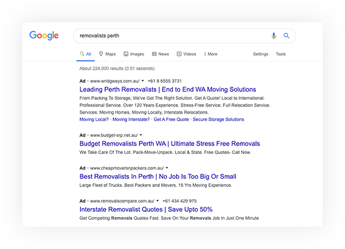

JS Charts Experiment by ZacKenichi
The clients website is now found for 633 number of keywords in a Google search versus 240 previously.
The client is ranking number 1 for ‘removalists Perth’ within 11 months.

Since the beginning of the project the client’s online leads have increased by 92% (from 206 to 395 on average, monthly)
25% of quote requests come from Google local pack and Google My Business